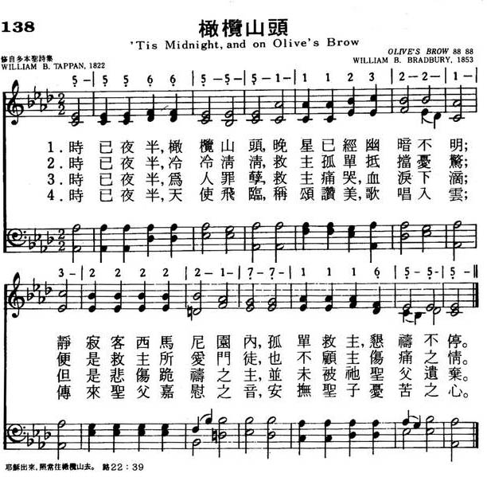

1753 'Tis Midnight, and on Olive's Brow
_William
B. Tappan
橄欖山頭
|
|
|
|
1 ‘Tis midnight, and on Olive’s brow
the star is dimmed that lately shone.
‘Tis midnight; in the garden now
the suff'ring Savior prays alone.
2 ‘Tis midnight, and from all removed,
Immanuel wrestles ’lone with fears.
E’en that disciple whom he loved
heeds not his Master’s grief and tears.
3 ‘Tis midnight, and for others’ guilt
the Man of sorrows weeps in blood.
Yet he who hath in anguish knelt
is not forsaken by his God.
Source: Voices Together #318
|
時方夜半，橄欖山頭，晚星低沉暗淡不明，
客西馬尼深夜寂靜，救主獨自來禱告儆醒。
時方夜半，冷冷清清，救主獨自抵擋憂驚，
主愛門徒都已沉睡，不顧救主傷心流淚。
時方夜半，救主流淚，汗如雨點為世人罪，
跪地禱告極其悲切，聖父並未將祂棄絕。 |
|
https://www.mred365.cn/szxg/7141.html

 |
| |
|
http://www.hymncompanions.org/Oct/26/stream.php
時已夜半，橄欖山頭，晚星已經幽暗不明；
靜寂客西馬尼園內，孤單救主，懇禱不停。
時已夜半，冷冷清清，救主孤單抵擋憂驚；
便是救主所愛門徒，也不顧主傷痛之情。
時已夜半，為人罪孽，救主痛哭，血淚下滴；
但是悲傷跪禱之主，並未被祂聖父遺棄。
時已夜半，天使飛臨，稱頌讚美，歌唱入雲；
傳來聖父嘉慰之音，安撫聖子憂苦之心。
 (請點耳機收聽)
(請點耳機收聽)
這一首詩歌原名「客西馬尼」（Gethsemane），它把路加福音22:39-44
耶穌獨自上山禱告的情景描繪得真切如畫。
橄欖山是一條南北長一英哩的石灰石山脊，面對耶路撒冷山頭，兩山之間，中隔汲淪溪。
自公元二世紀起，橄欖山成為基督教的名勝，它使人回想到基督在客西馬尼及被釘十架的情景。
希臘人視橄欖為博愛的象徵，祗有對國家有重大貢獻的人，才配戴以橄欖枝編織的冠冕。
這首詩是戴盼（William B. Tappan, 1794 - 1849）在1822年所作。
他原是波士頓的一個鐘錶匠，以後遷居費城，最初仍以修理鐘錶為業，同時參與主日學事工，後來任全美主日協會總幹事。 1840年，被公理會按立為牧師。
他大部分時間巡迴各地，訓練主日學的教育人才。

這首歌由白德瑞（William B. Bradbury, 見一月十四日）譜曲。
白德瑞自幼就繼承了他雙親的音樂稟賦。 隨名音樂家梅遜（Lowell Mason）學成後，以教授音樂、作曲、編輯詩歌為終身職責。
他的作品，結構簡明、順口易唱、適應時代的需要。他與同期作家配合呼應，將福音詩歌由佈道會的引用，流傳全美國，進而遍及全球，成為當代教會音樂的主流。

本曲作者白德瑞（William B. Bradbury,1816-1868），美國人，是福音詩歌的名作曲家。 他父親曾參加美國獨立革命，是教會詩班的班長。
白德瑞畢業于波士頓音樂學院，是一位出色的風琴家和詩班指揮，他是梅遜（Lowell Mason）的高足。 白德瑞婚後赴德國繼續深造，與孟德爾頌（Felix
Mendelssohn）為緊鄰，時而向其請益。白德瑞返美後舉辦音學講座，又和其兄弟開了二家鋼琴行。 他的聖曲風行迄今，我們熟知的有
「天父領我」（He Leadeth Me），
「堅固磐石」（The Solid Rock），
「耶穌愛我」（Jesus Loves Me），
「我罪極重」（Just As I Am）等。
白德瑞共編了59本詩歌集。 他將所教的學生組成千人大詩班，從而發動主日學音樂事工；並舉辦大規模的兒童音樂活動，促成音樂進入公立學校，成為課程之一。
他又發起教會音樂工作人員的全國性會議，使許多知名音樂家共聚一堂，互相切磋。 他對聖樂的貢獻至鉅至深。
中英文聖詩集參考
英文歌名 ’Tis
Midnight, and on Olive's
Brow
頌主新歌 138
頌主新歌(中英雙語) 141
生命聖詩 116
新聖詩 285
台語聖詩 108
讚美詩(新編) 89
校園詩歌II 78
https://ppfocus.com/0/sp1391e73.html
讚美詩史話|耶穌出來,照常往橄欖上去—《橄欖山頭歌》
2020-12-16 仰望主基督
讚美詩 第89首 橄欖山頭歌 讚美詩史話
'Tis midnight；and on Olive’s brow
「經文：「耶穌出來，照常往橄欖山去，門徒也跟隨他。」（路 22:39）」
這首詩每節都是以「時已夜半」開始，描寫主耶穌在最後晚餐之後，領祂的門徒往客西馬尼去，到了那裡，領了三個最親密的門徒往前走，要求他們「警醒片時」，主自己獨自去祈禱。那是一場最動人的情景（太
26:36-46）。
作者爲美國公理會（見第25首注①）牧師、主日學運動領袖塔潘（W.B.Tappan，1794-1849），原題爲《客西馬尼園》。塔潘生於美國麻省，父親去世後，他爲生計所迫，曾到波士頓城一家鐘錶店當學徒，1815年遷居美國費城當了制表工人。1822年起被選爲全美主日學聯合會總監督。他在任時，爲促進主日學運動不遺餘力，直到1849年6月去世。由於他忠誠工作，在1840年被委任爲公理會義務牧師。他足跡遍美國東西，到處演講，宣傳主日學的重要，真可稱爲義工的模範。他在業餘時間喜歡寫詩，於1819——1860年出版了詩集約17卷，這首《橄欖山頭》初見於1822年所出版的詩集中。
這是一首悲痛憂傷的詩，但應該記住「時已夜半」，光輝燦爛的早晨就在眼前了。
曲作者是布雷德伯里（W.B.Bradbury，1816——1868）曲調名《橄欖山(OLIVE』S BROW)》，是從原詩首句來的。
布雷德伯里生於美國緬因州的約克，是浸信會信徒。他14歲以前沒有接觸過風琴、鋼琴，1830年隨家遷到波士頓居住，才見到這些樂器。起先是加入梅森（事略參閱第75首）的歌唱訓練班，後也曾與梅森一同在師範研究所工作過，他的音樂天才表現得很突出，歷任浸信會多堂管風琴師和唱詩班指揮，待遇菲薄，年薪僅25元。後來到紐約教兒童唱歌，並向中學生介紹音樂，講解樂理，1847年得機會去德國深造，隨名師學習，返美後專任音樂教師。編寫過五十九本唱詩班用的歌譜，1854年自己成立鋼琴製造廠。1917年該廠併入納普音樂工廠。生平編著許多音樂書籍，譜寫了很多福音聖詩的曲調，在世界各地廣泛流傳。
《新編》裡的第89、191、203、225、239、258、271、398等首都是他譜的曲調。
https://preacherpollard.com/2013/02/18/singing-with-the-understanding-tis-midnight-and-on-olives-brow/
Neal Pollard
I love the poetry and melody of the William Tappan hymn, “‘Tis Midnight, and on
Olive’s Brow.” It is also so rich with meaning, but inasmuch as it was written
191 years ago it is possible that its wording gives younger worshippers, new
Christians, non-Christian visitors, and a good many of the rest of us difficulty
with comprehension. Good worship requires not only proper actions, but mental
engagement and a heart-connection with the lyrics.
The first verse begins,
“‘Tis midnight, and on Olive’s brow.” Some may have no idea what that means.
The song is about Jesus in the Garden of Gethsemane the night He was arrested
and ultimately led to the cross. Tappan seems particularly influenced by Luke’s
account of the events. While scripture does not single out the hour of
midnight, it does indicate Jesus was there at night (see Lk. 22:56, 66; cf. Jn.
18:3; Mt. 26:31, 34; etc.). Luke 22:39 indicates the garden’s location as the
Mount of Olives. “Brow” would be a poetic, late Middle English word for the top
of a hill. The phrase, “The star is dimmed that lately shown” would simply
reinforce the idea of darkness and the anxiety such would add to Jesus’
suffering.
The second verse
is pretty self-explanatory, though it might help some to remember that the
phrase, “the disciple whom Jesus loved” (John 19:26; 20:2; 21:7,20) appears to
be a humble term the apostle John uses to describe himself in his gospel.
“Heeds not” simply means “does not hear”; he had fallen asleep with the rest of
Jesus’ inner circle of disciples (Mk. 14:37).
The third verse
is also straightforward, though we have another allusion to Luke’s gospel,
with “the Man of Sorrows weeps in blood.” Luke 22:44 tells us that Jesus,
“being in agony” was “praying very fervently; and His sweat became like drops of
blood….” The second line of this verse speaks of Jesus’ kneeling in anguish,
which Luke cites in the last part of Luke 22:44, saying Christ was “falling down
upon the ground.”
The last verse
might cause some trouble, especially without consulting the footnote found under
the song in the “Praise for the Lord” songbook. “‘Tis midnight, and from ether
plains is borne the song that angels know,” is, for many, incomprehensible.
“Ether plains,” as explained in the book, is a poetic way to reference “upper
regions” or “heaven.” The song seems to allude to that part of the garden
experience where “an angel from heaven appeared to Him, strengthening Him” (Lk.
22:43). While this verse of the song seems to strain the meaning of Luke’s
words, it is a beautiful thought that angels or even the Father sang to comfort
the suffering Son (cf. Heb. 5:7).
We should take the time to understand the words of the songs we sing in worship
to God. This keeps worship from being merely external, without heart, and a
disconnection. Perhaps, too, it serves as a notice that we should explain the
meaning of older songs, especially those couched in language we do not use
today. It should also awaken the awareness that we need to incorporate songs in
worship that are more contemporary in language and melody along with these
beautiful, older songs.
https://wordwisehymns.com/2015/06/03/tis-midnight-and-on-olives-brow/
Words: William Bingham Tappan (b. Oct. 24, 1794; d. June 18, 1849)
Music: Olive’s Brow, by William Batchelder Bradbury (b. Oct. 6, 1816; d. Jan. 7,
1868)
Links:
Wordwise Hymns
The Cyber Hymnal
Hymnary.org
Note: Tappan’s date of birth is sometimes listed as October 29th. He wrote this
beautiful hymn when he was twenty-eight.
For us today, “midnight” refers to 12:00 a.m., the time when one day turns into
another. But the ancients usually marked time by the course of the sun through
the sky. They had no more accurate measure. Midnight for them was the
approximate mid-point between sunset and sunrise.
In the Bible, the word “midnight,” and the phrase “middle of the night” are used
about a dozen times. We can add to this the nearly three hundred times the word
“night” is found, which may well include the middle of those hours of darkness.
There was a marked difference between the way God’s people viewed the night
hours, and how those following the heathen religions did. For example, in the
Egyptian Hymn to the Aton, the darkness is dreaded because Aton (the sun) had
left the sky and gone home. But at creation God made both the Day and the Night
(Gen. 1:3-5). Those who trust in the Lord need not fear the night, because, as
David wrote of the Lord, “the darkness and the light are both alike to You” (Ps.
139:12).
We can face the night hours, trusting in Him. As many have found, He “gives
songs in the night” (Job. 35:10). That happened to two Christian missionaries
named Paul and Silas. They came to the city of Philippi, and preached the gospel
there, with some response. But when they delivered a slave girl from demonic
possession, her owners had them arrested. The girl had brought them money by
telling fortunes, and they were angry at the loss of this income (Acts
16:16-20).
The missionaries were beaten and thrown in prison, where their feet were
fastened securely in stocks (vs. 22-24). No doubt the dungeon was a dark and
fearful place, and their pain was great. The morrow was uncertain, but they
continued to trust in the Lord. We read of them:
“At midnight Paul and Silas were praying and singing hymns to God, and the
prisoners were listening to them” (vs. 25).
In that instance, their painful experience was followed by a great deliverance
(vs. 26-29). But that was not so in another case. In the dark night hours, the
trying time of Jesus was only beginning. After celebrating the Jewish Passover
with His disciples, the Lord went to the garden of Gethsemane on the Mount of
Olives to pray. In His holy humanity, Christ recoiled from what lay before Him,
but decisively submitted Himself to do the Father’s will (Matt. 26:39). “He
humbled Himself and became obedient to the point of death, even the death of the
cross” (Phil. 2:8).
William Tappan has given us a hymn about that. Tappan was trained first as a
clockmaker, in his youth. Later, he was licensed to preach, and had a fruitful
evangelistic ministry in America. He also took special interest in the work of
the Sunday School, and had a lifelong association with the American Sunday
School Union. William Tappan published ten books of poetry, and a number of his
poems were turned into hymns. Sadly, he died of cholera at the age of
fifty-five.
A hymn of his that’s widely used today is ‘Tis Midnight and on Olive’s Brow,
providing a stirring picture of Christ’s vigil in Gethsemane.
CH-1) ’Tis midnight, and on Olive’s brow
The star is dimmed that lately shone;
’Tis midnight, in the garden now
The suffering Saviour prays alone.
CH-2) ’Tis midnight, and from all removed
Emmanuel wrestles lone with fears;
E’en the disciple whom He loved
Heeds not his Master’s grief and tears.
It’s Luke’s account that tells us of the Saviour, in extreme distress, sweating
blood. “Being in agony, He prayed more earnestly. Then His sweat became like
great drops of blood falling down to the ground” (Lk. 22:44).
It’s also Luke who reports that there, in the garden, “an angel appeared to Him
from heaven, strengthening Him” (vs. 43). Tappan takes poetic liberty with his
angel choir, in CH-4, but it captures the spirit of what the Father did for His
Son in that hour–and it’s not impossible that something like that occurred.
CH-3) ’Tis midnight, and for others’ guilt
The Man of Sorrows weeps in blood;
Yet He who hath in anguish knelt
Is not forsaken by His God.
CH-4) ’Tis midnight, and from ether plains
Is borne the song that angels know;
Unheard by mortals are the strains
That sweetly soothe the Saviour’s woe.
Questions:
1) As far as we can know this, what things caused the Saviour’s anguish in the
garden?
2) In what circumstances have you wrestled intensely in prayer?
https://hymnstudiesblog.wordpress.com/2008/09/16/quotmidnight-on-olive039s-browquot/
"MIDNIGHT ON OLIVE’S BROW"
"…Went out into the mount of Olives….My soul is exceeding sorrowful…" (Matt.
26.30-38)
INTRO.:
A hymn which reminds us of the anguish that Jesus experienced on the Mount of
Olives just before His betrayal, arrest, and crucifixion, is "Midnight on
Olive’s Brow" (#183 in Hymns
for Worship Revised and #286 in Sacred
Selections for the Church). The text was written by William Bingham
Tappan, who was born at Beverly, MA, on Oct. 24, 1794. His father died when he
was twelve, and he became a Boston clockmaker’s apprentice. Moving to
Philadelphia, PA, in 1815, he practiced his profession there by making and
repairing clocks. Also he was quite a prolific poet and during his lifetime
published ten volumes of poems, including New
England and Other Poems in 1819. This hymn, originally entitled
"Gethsemane," first appeared in Tappan’s 1822 book Poems,
published at Philadelphia. Also in 1822, he secured work with the American
Sunday School Union, having become greatly interested in the Sunday school
movement, and maintained his connection with this organization until his
death.
Then in 1840, Tappan became a Congregational minister and was known as a
successful evangelist, working in many states. All the while, he continued
promoting the work of Sunday schools. He died in West Needham, MA, on June 18,
1849. The tune (Olive’s Brow) was composed for this text by William
Batchelder Bradbury (1816-1868). It first appeared in his 1863 work The
Shawm, published in New York City, NY, by Bradbury and George Frederick
Root (1820-1895). Bradbury provided well known tunes for several hymns, such
as "Sweet Hour of Prayer" and "He Leadeth Me." Several alterations were made
to Tappan’s original poem for the Hymnal
of the Methodist Episcopal Church published in Cincinnati, OH, in 1878,
and these have been accepted into most of our books as well.
Among hymnbooks published by members of the Lord’s church during the
twentieth century for use in churches of Christ, almost all have included this
hymn. It appeared in the 1921 Great
Songs of the Church (No. 1) and the 1937 Great
Songs of the Church No. 2 both edited by E. L. Jorgenson; the 1935 Christian
Hymns (No. 1), the 1948 Christian
Hymns No. 2, and the 1966 Christian
Hymns No. 3 all edited by L. O. Sanderson; the 1963 Christian
Hymnal edited by J. Nelson Slater; and the 1963 Abiding
Hymns edited by Robert C. Welch. Today, it may be found in the 1971 Songs
of the Church, the 1990 Songs
of the Church 21st C. Ed., and the 1994 Songs
of Faith and Praise all edited by Alton H. Howard; the 1978/1983 Church
Gospel Songs and Hymns edited by V. E. Howard; the 1986 Great
Songs Revised edited by Forrest M. McCann; and the 1992 Praise
for the Lord edited by John P. Wiegand; in addition to Hymns
for Worship, Sacred
Selections, and the 2007 Sacred
Songs of the Church edited by William D. Jeffcoat.
This hymn expresses the suffering of Jesus in the Garden of Gethsemane.
I. Stanza 1 tells us that Jesus went to Olive’s brow to pray
"’Tis midnight; and on Olive’s brow The star is dimmed that lately shown;
‘Tis midnight; in the garden now The suffering Savior prays alone."
A. While we do not know the exact time that Jesus went to Gethsemane on the
Mount of Olives, we do know that it was undoubtedly at night, so it is not
unreasonable to assume that He may have been there during the midnight hour:
Lk. 22.39
B. "The star is dimmed that lately shown" really does not refer to a star in
the sky, but to Jesus Himself, as one who just a week before was riding
triumphantly into Jerusalem but was now about ready to be killed: Lk.
19.28-38, 22.1-6
C. I happen to like the holds at the end of each line of poetry because I
think they add a little to the solemnity of the thought, but they can result
in some confusion; the writer is not saying that "’Tis midnight in the garden
now" (I don’t know what time it is in the garden right now) but that in the
account "’Tis midnight" and that "in the garden now the suffering Savior prays
alone": Lk. 22.41-42
II. Stanza 2 tells us that even the disciples whom Jesus took with Him did not
stay awake because of their sorrow
"’Tis midnight; and from all removed The Savior wrestles lone with fears;
E’en that disciple whom He loved Heeds not His Master’s grief and tears."
A. The original read, "Emmanuel wrestles lone with fears;" Emmanuel, who is
God with us, was wrestling with vehement cries and tears: Matt. 1.21, Heb. 5.7
B. Sacred
Selections changes the third and fourth lines to make them more general
and read, "E’en the disciples whom He loved Sleep while the Master grieves in
tears," though I do not know why, since the thought is the same either way,
unless the idea is that we cannot know that "the disciple whom Jesus loved" is
necessarily John, as some claim. However the evidence is rather clear; the
apostle John refers to the disciple whom Jesus loved leaning on His breast at
the Passover: Jn. 12.23; and he later identifies this disciple as the one who
was writing these things: Jn. 21.20-24 (the original apparently read "the
disciple" rather than "that disciple")
C. And John was mentioned specifically among the disciples who slept, not
heeding the Master’s grief and tears: Mk. 14.33-40
III. Stanza 3 tells us that Jesus’ anguish was very intense
"’Tis midnight; and for others’ guilt The Man of Sorrows sweats as blood;
Yet He who hath in anguish knelt Is not forsaken by His God."
A. Jesus was suffering not for His own sins, because He had none, but for the
sins of others, the just for the unjust: Isa. 53.3-5, 1 Pet. 3.18
B. The original read, "The Man of Sorrows weeps in blood." This is one of the
changes that Ellis Crum made in Sacred
Selections which is actually better, because the text does not say that
He sweat blood, but that He sweat as it were great drops of blood, referring
to the size of the drops; the idea is that His sweat rolled off him in great
drops just as blood often spurts out in great drops: Lk. 22.44
C. The truth is that Jesus’s blood was not actually shed for our sins until
the cross: Col. 1.20
IV. Stanza 4 tells us that Jesus was strengthened in His sorrow by an angel
"’Tis midnight; and from ether plains Is borne the song that angels know;
Unheard by mortals are the strains That sweetly soothe the Savior’s woe."
A. Hymns
for Worship changes "ether plains" to "heavenly plains," probably to make
the language more understandable. While I do recognize the need for the songs
that we sing to be understood, I also wonder about "dumbing down" songs by
cutting out perfectly good words just because they are not in common use any
longer. "From ether plains" is simply a poetic way of saying the upper regions
or heaven, from whence Jesus sought comfort during this time, as did also the
Psalmist: Ps. 121.1-2
B. In answer to His prayer, an angel appeared to Him from heaven,
strengthening Him: Lk. 22.43
C. And this was not the first time that an angel came to comfort Jesus in
times of trouble: Matt. 4.11
CONCL.:
The Bible records in great detail some of the events that took place while
Jesus prayed in the garden, knowing that His death was imminent. And many
other passages throughout the New Testament make reference, either directly or
indirectly, back to some of those events. Thus, there is great benefit in our
being reminded from time to time what happened at "Midnight on Olive’s Brow."
https://preacherpollard.com/2013/02/18/singing-with-the-understanding-tis-midnight-and-on-olives-brow/
SINGING WITH THE UNDERSTANDING: ‘TIS MIDNIGHT, AND ON OLIVE’S BROW
FEBRUARY 18, 2013 BY PREACHERPOLLARD
Neal Pollard
I love the poetry and melody of the William Tappan hymn, “‘Tis Midnight, and on
Olive’s Brow.” It is also so rich with meaning, but inasmuch as it was written
191 years ago it is possible that its wording gives younger worshippers, new
Christians, non-Christian visitors, and a good many of the rest of us difficulty
with comprehension. Good worship requires not only proper actions, but mental
engagement and a heart-connection with the lyrics.
The first verse
begins, “‘Tis midnight, and on Olive’s brow.” Some may have no idea what that
means. The song is about Jesus in the Garden of Gethsemane the night He was
arrested and ultimately led to the cross. Tappan seems particularly influenced
by Luke’s account of the events. While scripture does not single out the hour of
midnight, it does indicate Jesus was there at night (see Lk. 22:56, 66; cf. Jn.
18:3; Mt. 26:31, 34; etc.). Luke 22:39 indicates the garden’s location as the
Mount of Olives. “Brow” would be a poetic, late Middle English word for the top
of a hill. The phrase, “The star is dimmed that lately shown” would simply
reinforce the idea of darkness and the anxiety such would add to Jesus’
suffering.
The second verse
is pretty self-explanatory, though it might help some to remember that the
phrase, “the disciple whom Jesus loved” (John 19:26; 20:2; 21:7,20) appears to
be a humble term the apostle John uses to describe himself in his gospel. “Heeds
not” simply means “does not hear”; he had fallen asleep with the rest of Jesus’
inner circle of disciples (Mk. 14:37).
The third verse
is also straightforward, though we have another allusion to Luke’s gospel,
with “the Man of Sorrows weeps in blood.” Luke 22:44 tells us that Jesus, “being
in agony” was “praying very fervently; and His sweat became like drops of
blood….” The second line of this verse speaks of Jesus’ kneeling in anguish,
which Luke cites in the last part of Luke 22:44, saying Christ was “falling down
upon the ground.”
The last verse
might cause some trouble, especially without consulting the footnote found under
the song in the “Praise for the Lord” songbook. “‘Tis midnight, and from ether
plains is borne the song that angels know,” is, for many, incomprehensible.
“Ether plains,” as explained in the book, is a poetic way to reference “upper
regions” or “heaven.” The song seems to allude to that part of the garden
experience where “an angel from heaven appeared to Him, strengthening Him” (Lk.
22:43). While this verse of the song seems to strain the meaning of Luke’s
words, it is a beautiful thought that angels or even the Father sang to comfort
the suffering Son (cf. Heb. 5:7).
We should take the time to understand the words of the songs we sing in worship
to God. This keeps worship from being merely external, without heart, and a
disconnection. Perhaps, too, it serves as a notice that we should explain the
meaning of older songs, especially those couched in language we do not use
today. It should also awaken the awareness that we need to incorporate songs in
worship that are more contemporary in language and melody along with these
beautiful, older songs.
http://www.hymntime.com/tch/bio/b/r/a/d/bradbury_wb.htm
Biography

William was the son of David Bradbury and Sophia Chase, and husband of Adra
Esther Fessenden (married 1838)
Though fond of music from an early age, he was unable to devote much time
to its study until age 17, when, with help from friends, he attended the
Academy of Music in Boston,
run by Lowell
Mason and George
Webb.
About this time,
says Theodore
Seward, an
incident occurred which was a great source of mortification for the young
enthusiast. His parents, both of them old fashioned singers, were, of
course, greatly interested in their son’s progress.
He went home from
school one night, full of ardor and excitement, and undertook to
demonstrate the new method of singing and beating time. His gestures were
so extravagant, swinging his arm nearly its whole length, that his parents
were far more amused than edified.
However, they
restrained their mirth, not wishing to check his enthusiasm, but at last
the scene became too much for them, and they burst into a peal of
unresistible [sic]
laughter. This was too much for the eager performer.
His rapture was
turned into fiery indignation, and slamming his book shut in a rage, he
declared that they knew nothing at all about music, and marched out of the
room.
Another disappointment occurred in his first class for a singing school.
After issuing many circulars and ads, he anticipated a great crowd,
but at the specified time, not a single soul was there to greet him.
After a while a young man appeared, and still later five more came to witness
the embarrassment of the young teacher, who sat on the platform in a
clammy perspiration, inwardly
longing for some blessed knot-hole through which he might disappear.
This magnificent fizzle is spoken of as great value to him in bringing
him down from the clouds, and was probably more service than a grand success
would have been.
Through the influence of his former teacher, Lowell Mason, he secured a
position as a singing school teacher in Machias,
Maine, and afterward in St.
John, New Brunswick.
At length a position was given him as music teacher at the First Baptist
Church in Brooklyn,
New York, and later at the Baptist Tabernacle in New
York City.
In 1841, Bradbury turned his attention to children, and first held his free
singing classes, which became very popular. At his annual Juvenile
Music Festivals,
one could see a thousand children on a rising
platform, the girls wearing white, with white wreaths and blue sashes, and
the boys in jackets, with collars turned over in Byron style.
These efforts among the young gave Bradbury great celebrity, a host of warm
friends, and eventually led to his life work of providing Sunday School
songs. Over three million copies of his Golden
Trio, Golden
Chain, Golden
Shower, and Golden
Censer were published.
When Bradbury was about 15 years old, he joined the Charles Street Baptist
Church in Boston, Massachusetts. In New York he joined the Baptist
Tabernacle, and for many years later in life, he attended the
Presbyterian Church of Bloomfield,
New Jersey.
His widow related, He
was not strictly sectarian in his views, often saying he belonged to the
children’s church, meaning that wherever he could meet with children and do
them good he felt at home.
In 1847, Bradbury went to Europe to study music under the best German
masters. While crossing the Alps, he related this incident: Having met a
German, who was so enraptured, as he beheld the Alpine peaks bathed with
the golden glories of the rising sun, that he sang for joy.
Not wishing to be
outdone by a foreigner, especially in my own profession, I commenced
singing.
This captivated the foreigner
so
that he would not rest till he was taught the same pieces. This
was the only music-lesson I gave on top of the Alps.
Bradbury was a very generous man. A theology student once wrote him for a
loan of five dollars, that he might buy himself a pair of boots. Bradbury
sent him a check for $25, and a note saying he could not spare $5 at the
moment, but that he might manage to do without the $25 until he could send
$5 later.
In the rear of one Bradbury’s New York warehouses was a small office where
he often went to renew
his strength
and mount
up with wings as eagles.
Whenever he had to leave his house without
sufficient prayer time, it was said, he would go to this private
sanctuary and spend time in his devotions.
Nor did he allow business to intrude on this habit. His much loved Bible
occupied a prominent place on the table, and was well worn and filled with
marked passages that had illuminated in his own experience.
In his private journal he wrote, The
37th Psalm has been to me a never-failing source of comfort and
consolation. My little Bible frequently opens to it of its own accord.
The 27th is also a favorite when the enemy comes in like a flood.
Bradbury suffered from tuberculosis the last two years of his life. A few
weeks before his death, he said to Theodore Seward, I
long to be free from this evil body, which does so much to drag me down. I
feel that I want to
do right, that I want to
love my Saviour,
and act to please Him, but this busy brain and hasty nature lead me
oftentimes to things that are contrary to the real feelings of my heart.
A week before his death the children of Montclair visited him, each
bringing an oak leaf, which were woven into a wreath which was laid on his
coffin and buried with him.
The Saturday before his death he remarked to a friend, My
soul seems to have gained the victory. I am so happy now. I rest wholly
upon Christ. May God give me the grace to die. I am going to see mother.
He was buried beside his mother, and Asleep
in Jesus was sung as it was at his mother’s burial.
Music
He composed many tunes, including those for "He Leadeth Me"; "Just
As I Am"; "Sweet Hour of Prayer" (attributed to William W. Walford,
1772–1850);[3] "Savior,
Like a Shepherd Lead Us" and "My
Hope Is Built on Nothing Less", all of which can still be found in
hynmbooks and songbooks today.
-
William Batchelder Bradbury's Fresh
Laurels of 1867
-
Elliott Bradbury Just as I am
-
1864 A Sound Among the Forest Trees songsheet
https://en.wikipedia.org/wiki/William_Batchelder_Bradbury
From Wikipedia, the free encyclopedia

William Batchelder Bradbury
William Batchelder Bradbury (October
6, 1816 – January 7, 1868) was a musician who composed the tune to
"Jesus
Loves Me" and many other popular hymns.[1]
Biography[edit]
He was born on October 6, 1816 in York,
Maine where his father was the leader of a church
choir. He had a brother, Edward
G. Bradbury.
He moved with his parents to Boston and
met Lowell
Mason, and by 1834 was known as an organist. In 1840, he began
teaching in Brooklyn,
New York. In 1847 he went to Germany, where he studied harmony,
composition, and vocal and instrumental music with the best masters.
In 1854, he started the Bradbury
Piano Company, with his brother, Edward
G. Bradbury in New York City.[1] William
Bradbury is best known as a composer and publisher of a series of musical
collections for choirs and schools. He was the author and compiler of
fifty-nine books starting in 1841.[2]
In 1862, Bradbury found the poem "Jesus
Loves Me". Bradbury wrote the music and added the chorus: "Yes, Jesus
loves me, Yes, Jesus Loves me ..."
He died on January 7, 1868 in Bloomfield,
New Jersey (now Montclair,
New Jersey) at age 51.[1] He
was buried in Bloomfield
Cemetery in Bloomfield,
New Jersey.
He composed many tunes, including those for
"He Leadeth Me"; "Just
As I Am"; "Sweet Hour of Prayer" (attributed to William W. Walford,
1772–1850);[3] "Savior,
Like a Shepherd Lead Us" and "My
Hope Is Built on Nothing Less", all of which can still be found in
hynmbooks and songbooks today.
-
William Batchelder Bradbury's Fresh
Laurels of 1867
-
Elliott Bradbury Just as I am
-
1864 A Sound Among the Forest Trees songsheet
Publications[edit]
- The Shawm (1853)
- The Jubilee (1858)[1]
- Cottage Melodies (1859)
- The Golden Chain (1861)
- "Hold
On Abraham!" (1862)
- The Key-Note and Pilgrims'
Songs (1863)
- The Golden Censer (1864)
- Golden Trio (1864)
- Temple Choir and Fresh
Laurels (1867)
- Clairiona (1867) compilation of
previous works
References[edit]
.jpg)